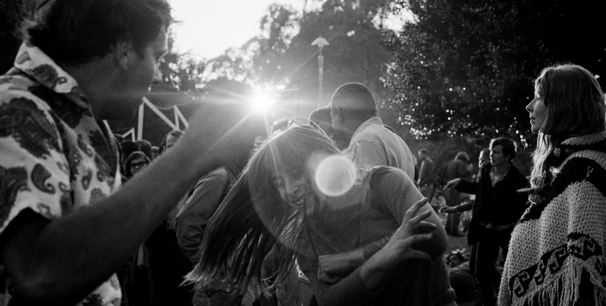

<%= t.include("partials/_top.html") %>
Summer of Love
50 years later: On Jan. 14, 1967, the Human Be-In proved to be a catalyst for the Summer of Love. The event held in Speedway Meadow in Golden Gate Park combined drugs, music and poetry and highlighted the rising tensions between the counter-culture and the establishment in San Francisco.

<% json.landing.forEach(function(t) { %>
<% if (t.class == 'top-two') { %>
<% } %>
<% }); %>
<% json.landing.forEach(function(t) { %>
<% if (t.class == 'top-two') { %>
<% } %>
<% }); %>
<%= t.include("partials/_bottom.html") %>